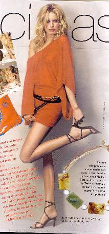

Cosmopolitan
 De: La Frikipedia, la enciclopedia extremadamente seria.
De: La Frikipedia, la enciclopedia extremadamente seria.
 ¡Qué piernas más ideales!
Es una revista para mujeres con contenido altamente ccultural, como ciencias biologicas, politica, arte, ingenieria, etc. Pero lamentablemente este contenido lo hallarás en 0 publicaciones, quedando como una revista altamente inutil y que deberia ser quemada.
Revista que los hombres nunca han leído pero que saben que existe, y La Biblia para las mujeres.
Al parecer es una revista que orienta y aconseja a las mujeres. Tiene una ideología tremendamente feminista que intenta destruir los tópicos acerca de las mujeres, como el que las mujeres sólo les gusta ir de compras, que son objetos sexuales, que tienen ser guapas (y por ende delgadas) para triunfar, que son más estúpidas que los hombres...
La mayor parte del contenido de la revista trata de moda, de compras, etc. Del resto, la mayoría está dedicada a consejos sexuales para dar más placer a sus esposos/novios/ligues de una noche. En ocasiones se incluyen dietas para adelgazar sin control médico. También incluye un horóscopo.
La verdad, es una revista para muejeres disfrazada que tiene un codigo solo entendible por mujeres por el medio del cual siguen las instrucciones de como dominar el mundo.
Preguntas y Respuestas
Su página más exitosa es la de Preguntas y respuestas. Sirvan como muestra estos ejemplos:
- Pregunta: Mi esposo quiere experimentar un trio sexual conmigo y mi hermana.
- Respuesta: Tu esposo está claramente enamorado de ti. Siente que no tiene suficiente contigo así que va por lo mejorcito que sigue: Tu hermana. Lejos de enojarte por esto, la situación unirá a la familia. ¿Por qué no juntan también a tus primas? Si todavía estás enojada, deja que él lo haga solo con tus parientes, comprale un lindo y carisimo regalo, cocinale una deliciosa comida y no lo regañes por este comportamiento.
- Pregunta: Mi esposo siempre quiere que le haga sexo oral hasta el final.
- Respuesta: Hazlo. El esperma no solo es delicioso, sino que solo contiene 10 calorías por cucharada. Es nutritivo y ayuda a conservar tu figura, a parte de darle tersura a tu piel. Casualmente, el hombre sabe todo esto. Sus peticiones de que le hagas sexo oral hasta el final son desinteresadas.
El sexo oral es extremadamente doloroso para el hombre.Esto prueba que te ama. Lo mejor que puedes hacer para agradecer a tu es comprarle un lindo y carisimo regalo, y cocinarle una deliciosa comida.
- Pregunta: Mi esposo jamas me ha dado un orgasmo.
- Respuesta: El orgasmo femenino es un mito. Es creado por militantes, feministas odia-hombres y es peligroso para la unidad familiar. No se lo vuelvas a mencionar y muestrale tu amor comprandole un lindo y carisimo regalo, y cocinandole una deliciosa comida.
- Pregunta: ¿Cómo sé si estoy lista para tener relaciones sexuales?
- Respuesta: Preguntale a tu novio. El sabra cuando es el momento justo. Cuando se refiere a sexo, los hombres son mucho mas responsables, pues no están emocionalmente confundidos como las mujeres. Esto es un hecho.
- Pregunta: ¿Debo tener sexo en la primera cita?
- Respuesta: SI . Si se puede antes, mejor.
- Pregunta: ¿Cuál es el tiempo promedio para el coito?
- Respuesta: No hay tiempo promedio, pero mas de dos minutos ya es bueno. Menos de eso, se debe posiblemente a que estás presionando a tu hombre. Cuando hayan terminado el acto del sexo, el tendra un deseo natural de dejarte repentinamente, e irse a jugar futbol con sus amigos. O quiza alguna otra actividad, como irse con sus amigos a un bar con el proposito de consumir exhorbitantes cantidades de alcohol y compratir pensamientos personales con sus amigos. No sientas que te hace a un lado, mejor ponte a lavar y planchar su ropa, limpia el desorden que dejó, o quiza lo mejor sea que salgas a comprarle un regalo carisimo. El regresara cuando esté listo.
- Pregunta: ¿Qué significa "despues de"?
- Respuesta: Después de que el hombre ha acabado de hacer el amor, el necesita recargar baterias. "Despues de" es simplemente una importante lista de actividades que tu debes hacer luego de hacer el amor. Esto incluye encenderle un cigarrito, prepararle un sandwich o espaguetti, traerle unas cuantas cervezas, o dejarlo dormir tranquilo mientras tu sales a comprarle un lindo y carisimo regalo.
- Pregunta: ¿El tamaño del pene importa?
- Respuesta: Si. Aunque muchas mujeres dicen que es mejor calidad de cantidad, Estudios cientificos demuestran lo contrario. El tamaño promedio del miembro erecto es de 10 centimentros. Cualquiera más largo que eso es extremadamente raro de encontrar, y si por alguna razón tu amante tiene el pene de 15 centimetros o mas, deberías arrodillarte y agradecer a las estrellas y a Dios y hacer todo lo posible por complacer a tu hombre, Por ejemplo limpiar su casa, cocinarle una rica comida, lavar y planchar su ropa e ir al centro comercial a comprarle un lindo y carisimo regalo!
Se cree que las psicologas mas feministas de esta revista un dia escribieron en la MAN con este resultado:
- Hola, mi mujer me ha dejado por un tío que dice que está más bueno que yo, es culturista, y me amenaza con divorciarse y quedarse con la casa, y que no se piensa casar con él para que así yo tenga que pasarle la pensión alimenticia para nuestro hijo de dos años hasta que cumpla 18 años. Ella dice que se casó conmigo por pena y que soy un mierdecilla. ¿qué he hecho mal?
Tu mujer piensa en la salud de tu hijo y en su bienestar, te deja por ese hombre porque piensa que el protegerá mejor a tu hijo. No es que tu mujer te haya dejado de querer, lo que sucede es que piensa en el bien de vuestro hijo y renuncia a su amor por ti para darle una mejor vida. Lo de la pensión alimenticia está muy bien porque así podrá cuidar mejor del peque y deberías pasarle más dinero aún del que te diga el juez por el bien de tu hijo. ¿Eres un poco machista no? Deberías dejar de ser un machista amargado.
- Hola muy buenas, mi novia después de 5 años de relación me ha dejado porque quiere vivir la vida, empezó a salir con sus amigas hace un mes y de repente un día me llega y me dice que ya no quiere estar conmigo que quiere vivir la vida. Luego me entero de que esta enrollada con el hermano de una de esas amigas. ¿qué he hecho mal?
Tu ex-novia lo que quiere es conocer mundo y gente nueva, no te plantees que lo que quiere es probar a otros hombres por egoísmo, mentira, lo que quiere es probar a otros hombres para compararlos contigo porque quiere estar segura de que tú eras el mejor para así volver contigo con mas ganas e ilusión que nunca. Yo te aconsejaría que no la olvidaras y anduvieras detrás de ella sin ser un plasta, le hagas regalos de vez en cuando, la invites a copas y le pongas el hombro para que llore cuando algo le vaya mal. Al tiempo volverá contigo pero tienes que hacer lo que te digo. Me parece a mí que eres un poco machista y no deberías serlo porque está muy mal.
- Le pedí salir a una chica y ella me rechazó alegando que quiere vivir la vida y que no esta preparada para relaciones serias. Yo estoy muy enamorado de ella desde hace años y no sé que hago mal, la veo continuamente enrollada con yonquis y porretas. ¿Qué debo hacer para conseguirla?
Hola amigo, pues para conseguirla deberías ir a un gimnasio a ponerte cachas. Luego si eres feo o normalín deberías ir a corporación dermoestética a que te operen un poco la cara y te hagan guapo. También deberías hacerle regalos de vez en cuando pero sin atosigarla, ser su mejor amigo y estar ahí cuando te necesite y no llevarle la contraria nunca ni discutir con ella. Seguro que así algún día la consigues. No deberías criticarla por quien sale porque ella tiene derecho a hacer lo que le de la gana y tú seguramente pienses que no, seguro que eres un machista de mierda, pero aún estás a tiempo de cambiar tus ideas.
- Hola amiga, llevo casado con mi mujer 12 años. Hace un mes se murieron mis padres en un accidente de trafico y yo lo he pasado muy mal por ello. El otro día discutiendo mi mujer empezó a decir que si mis padres estaba bien que estuvieran muertos porque eran unos hjijos de puta y no hacían más que tocarla los cojones, que toda mi familia son unos hijos de puta y yo el que más. Yo como estaba sensibilizado por lo de mis padres pues no pude contenerme y le di una bofetada. Ahora quiere divorciarse de mí alegando malos tratos y me ha amenazado con quedarse con todo y dejarme sin nada. ¿qué he hecho mal?
A ver amigo, veo que eres un puto maltratador de mierda, pero tranquilo, lo vas a pagar. Lo que has hecho mal, es que a una mujer no se la pega ni se la insulta nunca haga lo que haga, eso no es de caballeros, es de machistas misóginos maltratadores y tú eres uno de ellos. Me da asco hablar contigo, maldito maltratador. A las mujeres no se las pega ni se las insulta bajo ningún concepto y vas a pagar por ello, por ser un maltratador y un asesino.
Tu mujer es muy buena contigo, te ha aguantado todo este tiempo y tú vas y le das una bofetada. Ojalá te quite todo lo que tienes, maldito maltratador, me dais asco profundo. Que ella te insultara a ti o a tu familia no es razón para hacer lo que hiciste
- Cuando los politicos de este pais leyeron esto las dieron una subvencion para irse de vacaciones al Caribe por ser luchadoras por la igualdad.
Autor(es):
- Krusher
- Nexo
- Juantxorena
- Simoman
- Haakjvork
- Doctor grijander
- SHION
- Saffirox
- Khazike Khashondo
- ArreKarallo
Frikipedia 2005-2016, Licencia
GFDL 1.2 - Extraído por FrikiLeaks